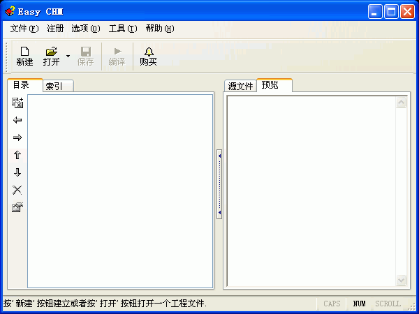
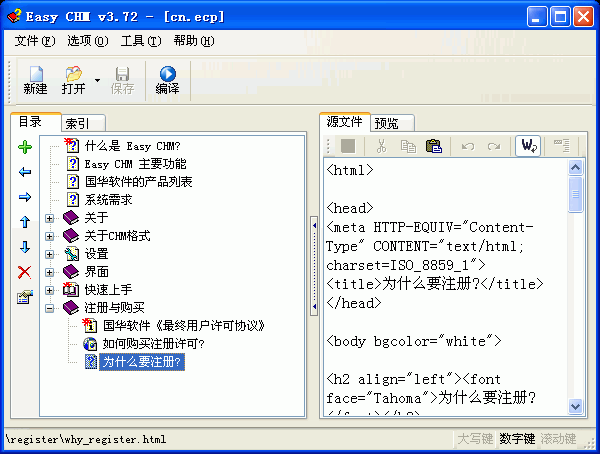
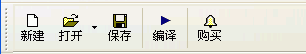
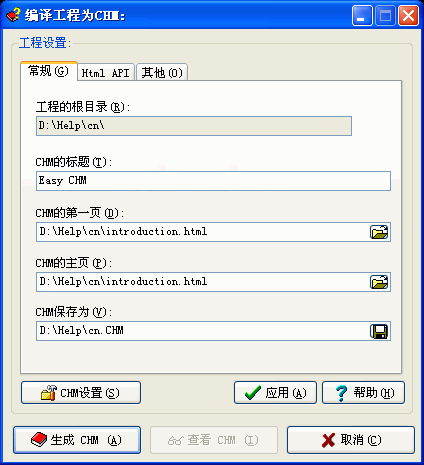
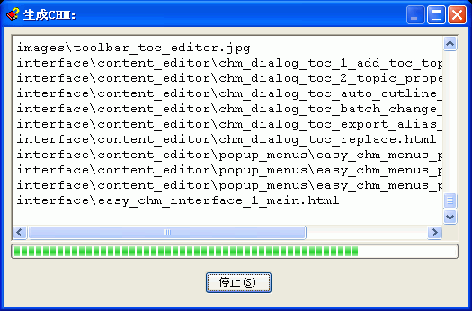

使用Easy CHM制作CHM文件非常简单,
通常您只需要下面的两个步骤:
步骤
1: 告诉Easy CHM您的网页、图片等源文件集中存放在哪个目录下
- Easy
CHM 会自动生成CHM的目录及索引.
运行Easy CHM, 点击"新建"按钮, 然后在弹出的"新工程目录"对话框里指定源文件所在的目录(注意:这个目录将会作为工程文件的根目录);

按"确定"之后, Easy
CHM 会自动生成CHM的目录及索引.

步骤
2: 现在可以生成CHM文件了.
您这时可以编辑自动生成的目录及索引项，也可以直接生成CHM.
点击程序主界面工具栏上的"编译"按钮, 在弹出的"编译工程为CHM"对话框里按下"生成CHM"
- 程序会使用默认的"CHM设置"生成CHM文件.



| 版权所有 © 2000-2007 国华软件 保留全部权利. |